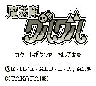

Mahoujin Guru Guru - Gameboy Games
Table of Contents
|
Series Information
Gameboy Games
|
SNES Games
Mahoujin Guru Guru

Genre:
Action RPG
No other information available at this time.
Anime Video Game Resource Center © 1998 by
Luis A. Cruz